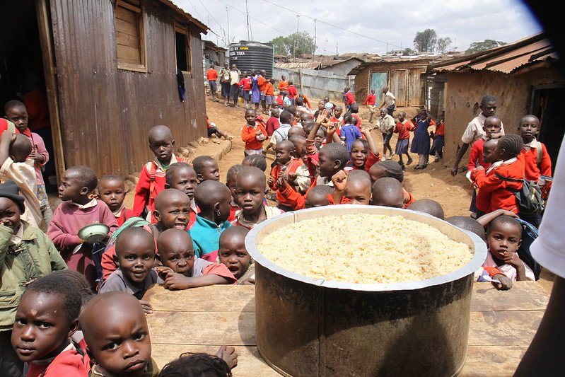
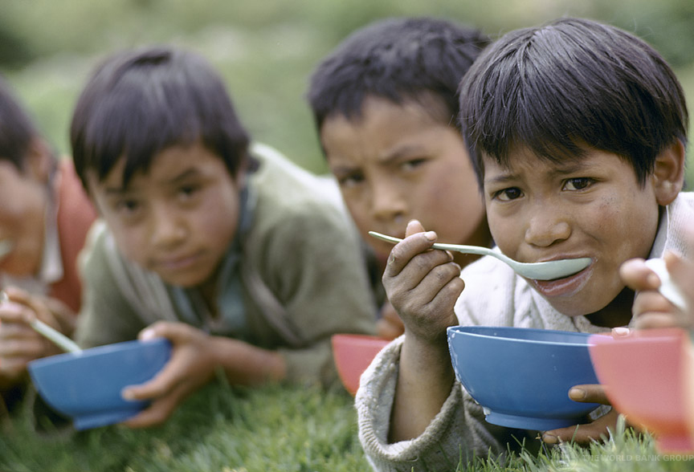
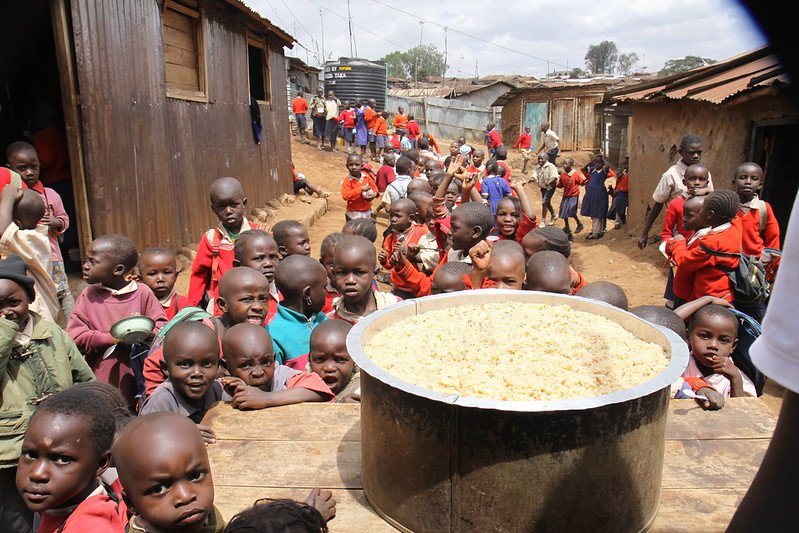
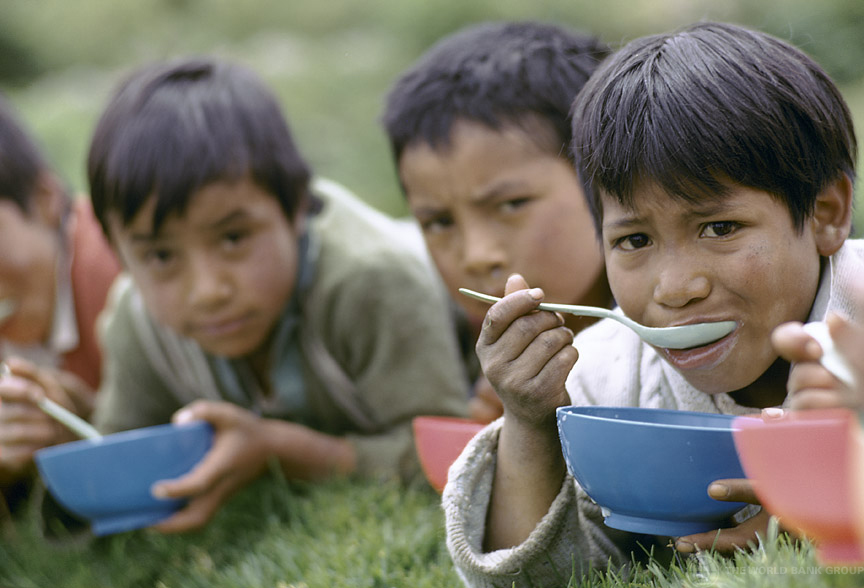

She is one of Save the Children's first South African Ambassadors, and says “I hope that I become the voice of children and represent their rights in the most sincere and respectful way, and that we can work together in making sure that the children of South Africa have access to quality education, healthcare and that their dreams are fully supported."
Given is the founder of the Afro Tenors, Joyous Celebration member and owner of Givy's Designer events. Given is giving back to the community by heartily using his gift of song and expertise in promoting and ensuring that every child, especially the most vulnerable, have a happy and healthy childhood.
 


